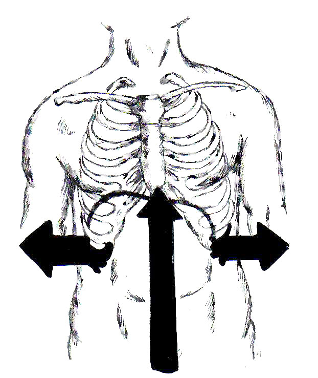
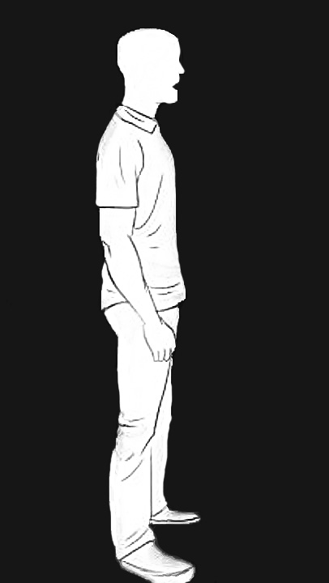

"Mettici passione e vai avanti con entusiasmo ogni minuto di ogni giorno fino a raggiungere il tuo obiettivo."
— Ava DuVernay
INTRODUZIONE
Lezione 1.0 - Respirazione e consapevolezza del diaframma
Per prima cosa percepiamo la respirazione diaframmatica, i suoi movimenti interni e l'espansione delle costole. La respirazione dovrà essere bassa e non al livello del petto. Il processo di respirazione diaframmatica significa inspirare e gonfiare l'addome. Espirare con la bocca aperta e permettere all'addome di svuotarsi d'aria.
Esercizio 1 Fill the balloon and empty it slowly
MODULE 1
Lezione 1 - Primi vocalizzi
Iniziamo a familiarizzare con la nostra voce con alcuni esercizi vocali da applicare quotidianamente. Gli esercizi vocali oltre ad allenare il nostro muscolo, hanno anche la funzione di riscaldare la nostra voce e il corpo per prevenire possibili danni alle corde vocali.
Ex 1 Humming
Ex 2 Humming and Mi
Ex 3 Muu
Ex 4 Lip Trill
Ex 5 Ma Me Mi Mo Mu
MODULE 2
Lezione 2 - Respirazione e controllo emissione del suono
Il diaframma è un muscolo che agisce nel processo di respirazione. È posizionato al centro del tronco e durante l'inspirazione, si contrae e si abbassa aumentando di volume.
Ex 1 Exhale S
Ex 2 Humming and Lip Trill
Ex 3 Singing an A with a straw
Ex 4 Singing an A with and without a straw
Ex 5 Singing Glide with a straw
MODULE 3
Lezione 3 - Sostegno del suono

Ora cerchiamo di sentire l'espansione della schiena quando inspiriamo, provando a rilassare il collo e la mascella.
Ex 1 Feeling our back expanding
Ex 2 Doing short and fast breathes
Ex 3 Short & fast breathes + singing an A
Ex 4 Lip Trill and vowel U
Ex 5 Sing numbers using F major scale
MODULE 4
Lezione 4 - Cantare note alte
Cerca di ricreare la sensazione dello sbadiglio quando sali di tonalità, in questo modo si alzerà il palato molle e si avrà un suono più piacevole e meno forzato (evitando il suono nasale).
Ex 1 Gnà Gnà Gnà Gnà Gnà
Ex 2 Hi Hi Hi Hi
Ex 3 Singing mute Glide trying to yawn
Ex 4 Singing Glide trying to yawn
MODULE 5
Lezione 5 - Postura, Range e Prime canzoni
La postura nel canto dovrebbe essere eretta, con corpo rilassato e non rigido. Le gambe dovrebbero essere leggermente aperte e piegate in avanti.

Esercizio 1 Finding your Vocal range
Il Range vocale rappresenta la nostra estensione vocale in base alla nostra tonalità più bassa e più alta che riusciamo a raggiungere. Sei un basso, baritono, tenore, contralto, mezzosoprano, soprano?